5: Visualisation#
Visualisation Techniques#
Here we will give a brief overview of different visualisation techniques, highlighting where they are effective and how they should be used.
Multi-series Line Chart: Line charts are effective for time-series data, where the horizontal x-axis would denote time, and the y-axis would denote some numerical attribute. With colour-coding, we can depict multiple lines on the same chart, where the purpose is for comparison between two or more observed measures.
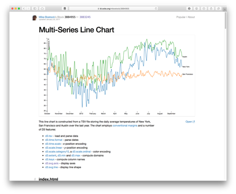
Bar Chart: This depicts numerical attributes for different discrete classes along the x-axis, rather than some continuous value. This could be some count obtained for various countries, or observations of different malware varients. Height of the bar denotes the numerical value.
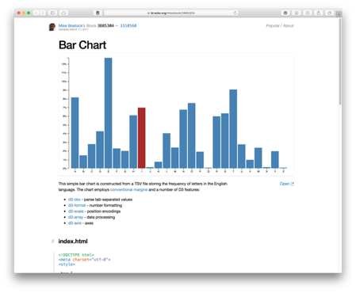
Scatter Plot: This is useful for comparing two different numerical attributes together, for example the number of bedrooms in a house and the associated house price. Another example may be the RAM and CPU usage of infected and benign workstations, for studying behaviour differences in a malware investigation. The scatter plot helps to identify the relationship between two indendepent variables, often referred to as the correlation between two variables. Highly correlated variables will share some statistical pattern (e.g., either that they increase or decrease together which would be a postive correlation, or that when one increases the other decreases – and visa versa – which would be a negative correlation).

Bubble Chart: This is actually very similar to a bar chart, in that it shows different classes or categorical attributes, and it shows a numerical value associated with this – however here rather than a bar we use a bubble. Firstly, the plot is more visually appealing than a bar chart, and so may be more suitable for engaging the desired audience. Secondly, there is no sense of order – a bar chart runs left to right, whereas bubbles are dynamic and can place wherever, be it automatically or manually. Finally, bubble charts are arguably more compact than bar charts – where a very tall bar may result in lots of white space. However, bubble charts are known to be misleading. Firstly, is the numerical quantity mapped to the diameter, the radius, or the area of each bubble? In theory, you could use any of these geometric properties of the shape, resulting in different scaling of each entry. Secondly, how easy is it to compare one bubble to the next beyond whether it is larger or smaller, for example, how easily can I identify where an attribute to twice the value of another? In such scenarios the bar chart is more suitable – comparing two lengths when side-by-side is much easier than comparing two “bubbles” – be it by diameter, radius or area – when they are arbitrarily placed on the plot. As mentioned, the bubble chart is about creating an impactful visualisation that captures the attention of the audience, rather than providing a scientific analysis tool.

Force-Directed Graph: We discussed how a scatter plot can show relationships between attributes, however this tends to be for a one-to-one mapping between two variables. How do we show one-to-many relationships? Force-directed graphs help, where points are connected by edges, and there may exist a one-to-one or one-to-many relationship between points. A prime example is a social network graph, where nodes are people and edges are whether the two people know each other (i.e., are connected). The same can apply to computers on a network. They are described as force-directed since nodes are not positioned with a fixed x and y point like on a scatter plot, but instead, nodes are positioned using a physics-based force algorithm that will treat each connection like elastic where connected points will be pulled closer together. This force layout helps to further draw out relationships between nodes, especially when a high number of nodes are depicted. However, force-directed networks should be used carefully. In a situation where many nodes are all connected together, this creates strong forces pulling together and essentially forms a cluster – often described as a ‘hairball’. If you want to show many connected nodes together, you should consider how to best filter the data so that it can remain informative.
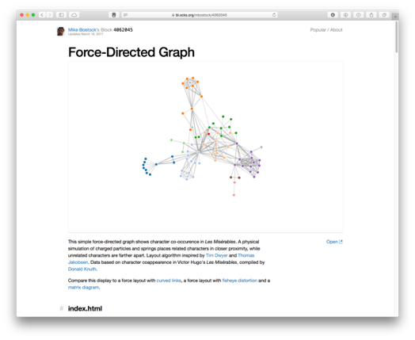
Parallel Coordinates: Whilst scatter plots are useful, they are limited to 2 or 3 dimensional spaces. Can we visualise information that may be higher dimensionality? Parallel coordinates achieve this, where each vertical line represents a data axis (like the x and y of a scatter plot would), however rather than denoting a point on each axis, we use a line to connect a pair of axes. We do this for each pair as the axes are displayed, so that a single data instance is essentially depicted by a line that crossed each axis. We can identify correlations between pairs of neighbouring axes – do the lines all go up or down together, or do they cross over? As in other chart types, we can colour code by class. We can also filter (or brush) axes, much like we may set a region of a scatter plot. Parallel coordinates are therefore very effective – however they may be unfamiliar to some users, and so there is a learning curve to overcome. Another limitation is that correlations can only be assessed on neighbouring axes – some implementations allows axis reordering however this can create additional overhead for the analyst.
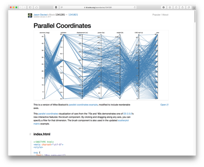
Treemap and Sunburst: Treemaps are excellent for depicting hierarchy. They were initially developed for conveying information about computer files and folder structure. Each entry is scaled based on the numerical value being considered (e.g., file size). Since a group of files may exist within the same folder, we can group them together and therefore show the collective size of the folder also (shown either by a bounding box, or by colour coding). Since the full rectangular area denotes the full space available (e.g., the entire hard drive), it can show size in relation to the full disk, and means that available space is also shown (essentially as a blank area of the chart). The sunburst is a similar concept, except it is mapped to a circle rather than a rectangular area. The hiararchical structure works outwards in the sunburst, and so is not as compact as the treemap, however, it does show proportion well just like the treemap and it does so in a striking and visually appealing way, therefore making it good for audience engagement. Some modern operating systems (e.g., Ubuntu) use the sunburst to show disk space analysis.
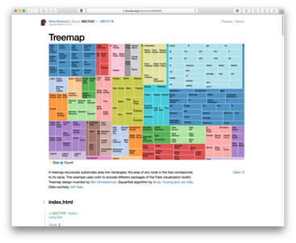 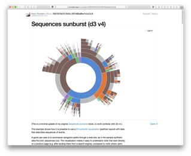
Star Plots: The final visualisation type we will consider here is the star plot. These essentially map multiple attributes in a small and compact format, often referred to as a glyph (where a glyph is a small depiction of multi-variate data). In this example, 8 attributes are mapped in each glyph. The mapping is similar to how a parallel coordinates plot works, except here the layout is radial rather than left-to-right.
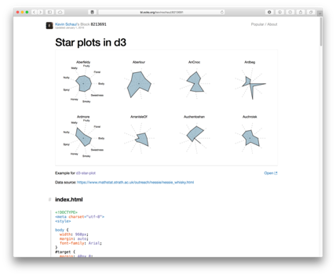
Visualisation for Cyber Security#
Having introduced differe forms of visualisation, here we will now look at how these can be used for the purpose of cyber security. Of course, this is not an exhaustive set, but will help to illlustrate the effectiveness of visualisation techniques for analysing large complex data, which is essentially what we aim to do as part of understanding and defending large corporate networks. For more details, and further examples, I recommend looking at the two books: Applied Security Visualization by Raffael Marty and Security Data Visualisation by Greg Conti, as well as the primary text for the course.
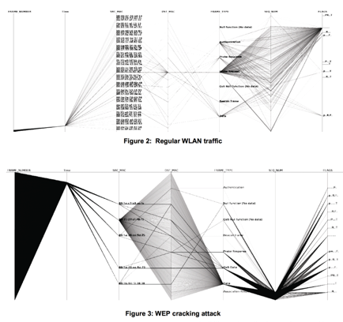
In this example, we see parallel coordinates being used to depict network traffic across a set of 7 attributes. This image shows a comparison between regular wireless network traffic, compared against a WEP key cracking attack against the network. We can see the difference between the two activities clearly in the two images, where essentially the WEP cracking attack is scanning all available ports and uilising a single protocol. The approach is detailed further in the paper, “Visualizing Networking Activity using Parallel Coordinates” by Tricaud et al.
In the paper “Fast detection and visualization of network attacks on parallel coordinates” by Choi et al., they propose the use of parallel coordinates for network traffic analysis, but use this to define small glyphs that are indicative of network behaviours. The distinguishable shape of the data plots can be treated as a signature here, to easily recognise behaivours such as worm, port scan, or DDoS.

As mentioned earlier, similar to this is the star glyph, which maps axes in a radial manner to create a connected polygon, where the length from the centre to each point denotes a variable. In the example shown here, we have 8 attributes about network packet captures mapped, and so we can show individual packets as glyphs for comparison. Glyphs are widely used in various applications, for example, insider threat detection. This example shows 18 individuals from a company and their behaviours during a 12 month period. Even with such volume data, some differences can be identified (suspicious cases are highlighted with the grey circle, two of these users are denoted in blue as potentially malicious).
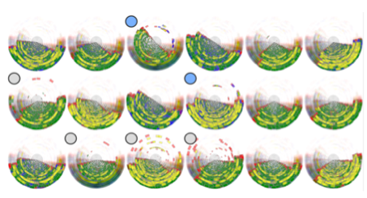
 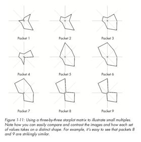
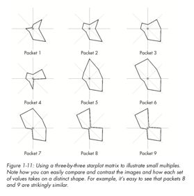
We have mentioned node-link diagrams (also referred to as force-directed) for social media analysis and network profiling. Here we show three images to convey this further. In particular, we can see the complexity of the node-link diagrams as more nodes are included, and where a central node has many connections, we start to see the hairball effect mentioned earlier. This is where good visual analytics planning is required to have appropriate forms of filtering and selection to make the chart useable.
 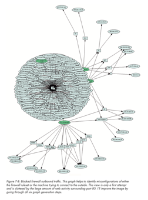
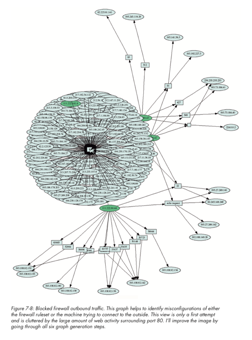

Treemaps were discussed earlier, and here we see snort alerts mapped against a tree map to show the volume of alert types, where alerts will naturally exist as part of a group (i.e., within a hierarchy).
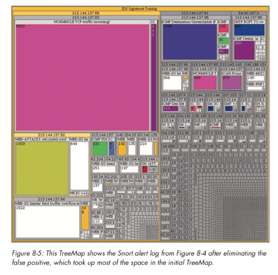
A final example to consider is the use of visualisation for binary file analysis (we will discuss this in further detail later in the course). Greg Conti shows an excellent example of this, where binary data is mappped to pixel values to produce an image of the data. We can examine what the same image may look like using different image compression schemes (e.g., bmp, png, gif, jpeg), as well as how a Microsoft Word document may appear once password-protected or encrypted (here we see that the password-protected file does not encrypt the original data).
 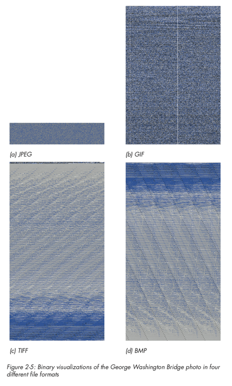
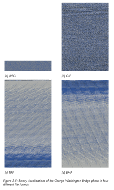

Visual Channels#
The final point to cover in this session is on visual channels. All visualisations are made up of visual channels, and so we need to ensure that these channels are used effectively. Some examples of channels would be colour, size, orientation, shape, texture, opacity. Spatial positioning is also a visual channel – for example how data is mapped to an axis or positioned within a space. How do we know which channels should map to which data attribute? There are no fixed rules as such – but as we discussed some of the weaknesses in visualisations earlier, we need to consider what may work best for our data. Mapping a single numerical value to a circle for example can cause confusion. We need to think about the type of data being shown. There are 4 fours we need to recognise: nominal, ordinal, interval, or ratio. Nominal data can be text labels (e.g., name) or categories (e.g., car type) – there may not be a specific order to these – we may use alphabetical ordering but that is purely for convenience. Ordinal data does have some order to it, however the difference between each possible value is unknown or not exact (for example, a threat level scale or a likert scale). Interval data is ordered and the interval between each data point is known – for example, temperature values. Ratio data is the same, however it has an absolute zero. Temperatures can be negative, however a packet size or a count of some data would be a ratio as you would not have a negative value for this.